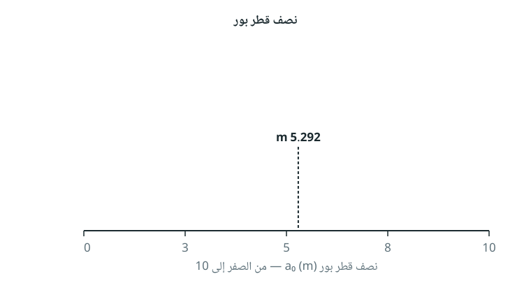

نصف قطر بور
Bohr radius
نصف قطر بور a₀ هو المقياس الطبيعي لحجم ذرة الهيدروجين في الحالة الأرضية، ويعرَّف بـa₀ = 4πε₀ħ²/(m_e·e²). قيمته من CODATA 2022 هي 5.291 772 105 44×10⁻¹¹ m، أي نحو 0.529 أنغستروم.
في نموذج بور يكون مدار الإلكترون الأدنى دائرة نصف قطرها a₀، وهي المسافة التي يتوازن فيها جذب النواة مع القوة المركزية للحركة الكمومية. وa₀ ليست نصف قطر الذرة بالمعنى الصلب: في الميكانيكا الكمية هي المسافة التي يكون عندها احتمال وجود الإلكترون أعلى ما يمكن. مثال: ذرة الهيدروجين في الحالة الأرضية لها a₀ = 52.9 pm، وذرة الهيليوم المتأينة مرة واحدة (He⁺) لها نصف قطر 26.5 pm لأن نصف القطر يتناسب مع 1/Z.
كيف تعمل الظاهرة؟
الإلكترون في الذرة محصور بين قوة الجذب الكهربائي نحو النواة ومبدأ عدم اليقين الذي يمنع انهياره عليها. وحين يُوازن بين الطاقة الكهربائية السالبة والطاقة الحركية الكمومية تظهر مسافة اتزان طبيعية هي a₀. ولهذا لا تعتمد a₀ على طاقة الإلكترون في مدار معين بل على ثوابت الطبيعة وحدها، وتُستعمل وحدةً لقياس الأطوال الذرية في كل الذرات.
العلاقة بالأرقام
a₀ = 4πε₀ħ²/(m_e·e²) = 5.291 772 105 44×10⁻¹¹ m، وطاقة الحالة الأرضية E₁ = −e²/(8πε₀a₀) = −13.606 eV. ونصف قطر المدار n في نموذج بور r_n = n²·a₀/Z. مثال: مدار n=2 في الهيدروجين نصف قطره 4×52.9 = 211.7 pm، وطاقته −3.40 eV.
مفاهيم متقاربة
يُفرَّق بين a₀ ونصف القطر الأيوني والذرّي التجريبي: الأول ثابت طبيعي والثانيان يعتمدان على البيئة الكيميائية. ويُفرَّق بين a₀ وطول موجة كومبتون المُخفَّضة ƛ = ħ/(m_e·c) = 3.86×10⁻¹³ m، وهي أصغر بـ137 مرة. ويُفرَّق بين a₀ وa₀* المصحح بالكتلة المخفضة. وأخيراً يُفرَّق بين نصف قطر بور ونصف قطر المدار في الذرات الثقيلة، حيث تقلّ المسافات بسبب زيادة Z وتصحيح النسبية.
حدود التطبيق
a₀ مقياس دقيق للهيدروجين والذرات الشبيهة به، لكنه ليس نصف قطر فعلياً لأي ذرة متعددة الإلكترونات. ولا يصف المسافات في الجزيئات حيث تختلف أطوال الروابط. ولا يصلح في الذرات الثقيلة جداً حيث تصبح التصحيحات النسبية كبيرة. وأخيراً لا يصف أبعاد المواد الصلبة، حيث المسافات بين الذرات تعتمد على الترابط البلوري وقد تبلغ ضعف a₀ أو أكثر.

| الكمية | القيمة | المصدر |
|---|---|---|
| نصف قطر بور a₀ | 5.291 772 105 44×10⁻¹¹ m | [1] |
المصادر
- 1 CODATA Value: Bohr radius — NIST — CODATA 2022 recommended values (2024). physics.nist.gov/cgi-bin/cuu/Value?bohrrada0 · اطُّلع عليه 2026-11-22
- 2 CODATA Value: Rydberg constant — NIST — CODATA 2022 recommended values (2024). physics.nist.gov/cgi-bin/cuu/Value?ryd · اطُّلع عليه 2026-11-22
- 3 CODATA Value: fine-structure constant — NIST — CODATA 2022 recommended values (2024). physics.nist.gov/cgi-bin/cuu/Value?alph · اطُّلع عليه 2026-11-22
استشهد بهذا المصطلح
الصيغتان مبنيتان من بيانات الصفحة نفسها: العنوان والتاريخ ورابط النسخة المنشورة.
نصف قطر بور — Bohr radius. (2026). ديوان المعرفة — انفراد. https://infiradev.com/diwan/terms/term-bohr-radius.html
@misc{term-bohr-radius2026,
title = {نصف قطر بور},
titleaddon = {Bohr radius},
howpublished = {{ديوان المعرفة — انفراد} — مرجع علمي عربي},
year = {2026},
url = {https://infiradev.com/diwan/terms/term-bohr-radius.html},
urldate = {2026-11-26},
note = {مراجعة علمية: hermes (مراجعة معتمدة 2026-11-26)}
}
راجعه: hermes (مراجعة معتمدة 2026-11-26) · 2026-11-26 · آخر تحديث 2026-11-22